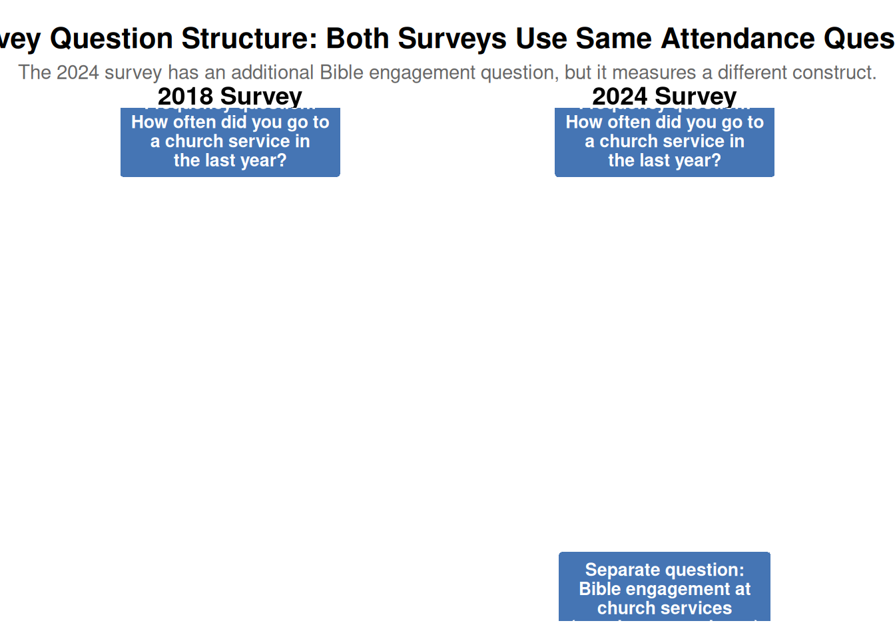
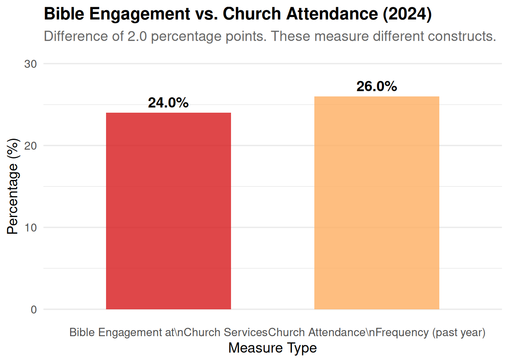

Question Order Effects
Impact of survey design differences on responses
Correction: Question Order Effect Analysis
UPDATE: After reviewing the actual survey PDFs, the question order effect claim appears to be incorrect.
The “Church service” binary question (showing “Yes - in the past year” at 24%) is not a standalone question about church attendance. Instead, it is part of a different question: “Have you read, listened to, or engaged with the Bible in any of the following locations/situations?” where “Church service” is one location option alongside “Home”, “Sightseeing in a cathedral or church”, “School, college or university”, and “Art exhibition/TV/film/music”.
Both the 2018 and 2024 surveys ask the same frequency question: “Apart from weddings, baptisms/christenings, and funerals how often, if at all, did you go to a church service in the last year?”
Therefore, there is no question order effect from a binary attendance question being asked before the frequency question, as no such binary attendance question exists in the 2024 survey.
What the “Church service” Binary Question Actually Measures
The binary question showing “Yes - in the past year” (24%) for “Church service” is asking about Bible engagement in church services, not church attendance itself. This is fundamentally different from asking “Have you attended a church service in the past year?”
The question structure is: - Question: “Have you read, listened to, or engaged with the Bible in any of the following locations/situations?” - Location options: Home, Church service, Sightseeing in a cathedral or church, School/college/university, Art exhibition/TV/film/music - Response options for each location: “Yes - in the past year”, “Yes - more than a year ago”, “Never”
This means the 24% figure represents people who have engaged with the Bible at church services in the past year, which is not the same as people who attended church services. One can attend church without engaging with the Bible, and one can engage with the Bible at church without necessarily attending regularly.
⚠️ IMPORTANT: The binary question about “Church service” measures Bible engagement at church services, not church attendance. Comparing this to the frequency attendance question is comparing different constructs, which explains any apparent inconsistencies.
Internal Consistency Check
Note: The binary “Church service” question measures Bible engagement at church services, while the frequency question measures church attendance. These are different constructs, so we would not expect them to match exactly. However, we can still examine the relationship:
Show the code
attendance_data <- read_csv(here::here("data/bible-society-uk-revival/processed/church-attendance-extracted.csv"))
# 2024 binary response
binary_2024 <- attendance_data %>%
filter(year == 2024, question_type == "binary",
response_category == "Yes - in the past year") %>%
pull(total_pct)
# Sum of frequency responses (past year categories)
freq_2024 <- attendance_data %>%
filter(year == 2024, question_type == "frequency") %>%
filter(response_category %in% c(
"Daily/almost daily", "A few times a week",
"About once a week", "About once a fortnight",
"About once a month", "A few times a year",
"About once a year"
))
freq_sum_2024 <- sum(freq_2024$total_pct, na.rm = TRUE)
discrepancy <- abs(freq_sum_2024 - binary_2024)
is_inconsistent <- discrepancy > 2Comparison of Bible Engagement vs. Attendance (2024)
Comparing the two measures (recognising they measure different things):
- Bible engagement at church services (‘Yes - in the past year’): 24.0%
- Sum of frequency attendance categories (past year): 26.0%
- Difference: 2.0 percentage points
The fact that Bible engagement (24%) is lower than attendance frequency (26%) is actually logical: not everyone who attends church engages with the Bible during services. The small difference suggests most church attendees do engage with the Bible, but some may attend for other reasons (social, cultural, etc.).

Conclusion on Question Order Effects
After reviewing the actual survey PDFs, there is no question order effect from a binary attendance question being asked before the frequency question, because:
- The “Church service” binary question is part of a Bible engagement question, not a standalone attendance question
- Both 2018 and 2024 surveys use the same frequency question: “Apart from weddings, baptisms/christenings, and funerals how often, if at all, did you go to a church service in the last year?”
- The questions are directly comparable in structure
The earlier analysis incorrectly assumed the “Church service” binary question was about attendance when it actually measures Bible engagement at church services—a different construct.
Weekly Attendance Comparison
Since both surveys use the same frequency question, the comparison is methodologically sound:
Show the code
weekly_2018 <- attendance_data %>%
filter(year == 2018, response_category == "At least once a week") %>%
pull(total_pct) / 100
weekly_2024 <- attendance_data %>%
filter(
year == 2024,
question_type == "frequency",
response_category %in% c("Daily/almost daily", "A few times a week", "About once a week")
) %>%
summarise(total_pct = sum(total_pct)) %>%
pull(total_pct) / 100Weekly Attendance Comparison
- 2018: 7.0%
- 2024: 11.0%
- Difference: +4.0 percentage points
Since both surveys use the same question wording and structure, this comparison is methodologically valid. However, other factors (demographic changes, sampling differences, etc.) may still affect comparability.
Comparing Different Constructs
The “Church service” binary question measures Bible engagement, not attendance. Comparing it to attendance frequency:
Show the code
# 2018 "ever attended" estimate (sum of all frequency categories except "Never")
ever_2018 <- attendance_data %>%
filter(year == 2018) %>%
filter(response_category != "Never") %>%
summarise(total = sum(total_pct, na.rm = TRUE)) %>%
pull(total)
# 2024 attendance (sum of frequency categories except "Never")
ever_2024 <- attendance_data %>%
filter(year == 2024, question_type == "frequency") %>%
filter(response_category != "Never") %>%
summarise(total = sum(total_pct, na.rm = TRUE)) %>%
pull(total)
binary_2024 <- attendance_data %>%
filter(year == 2024, question_type == "binary",
response_category == "Yes - in the past year") %>%
pull(total_pct)Attendance vs. Bible Engagement Comparison
- 2018 attendance (frequency-based): 52%
- 2024 attendance (frequency-based): 38.0%
- 2024 Bible engagement at church services: 24.0%
The Bible engagement figure (24%) is lower than both attendance figures, which makes sense: not everyone who attends church engages with the Bible during services. This is not a contradiction but reflects different constructs being measured.
Final Conclusion
Correction: After reviewing the actual survey PDFs, the question order effect analysis was based on a misunderstanding. The “Church service” binary question is not about attendance but about Bible engagement at church services.
Key findings:
- Both 2018 and 2024 surveys use the same frequency question about church attendance
- The questions are directly comparable in structure
- There is no question order effect from a binary attendance question
- The “Church service” binary question measures a different construct (Bible engagement) than attendance
Recommendation: The 7% → 11% weekly attendance increase can be compared directly since both surveys use the same question. However, other methodological factors (demographic changes, sampling differences, etc.) should still be considered when interpreting the results.